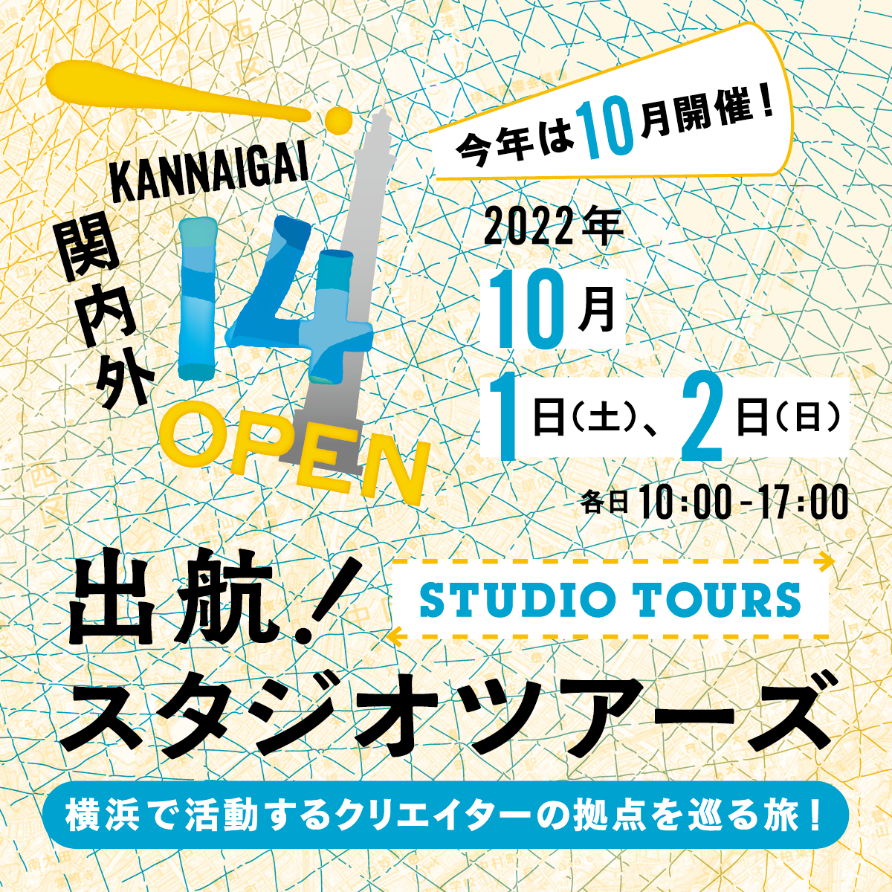
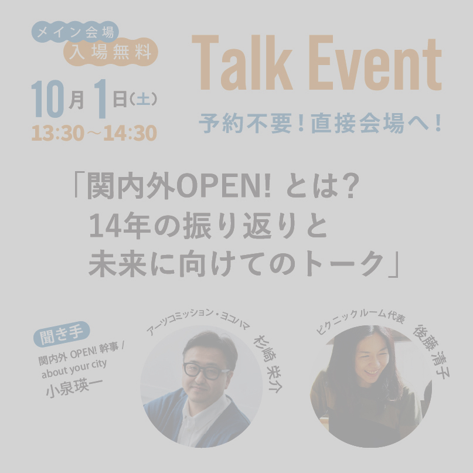
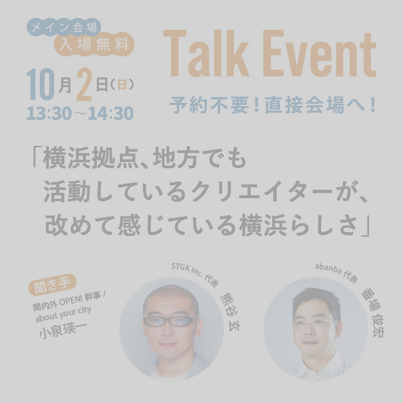

デザイナーや建築家、アーティスト等、国内外問わず活躍するクリエイターが多く拠点を構える横浜。第一線で活躍する関内外クリエイターの仕事は、地域経済・観光・環境・福祉・教育等さまざま分野にわたり、私たちの生活につながっています。クリエイターが普段どんなことをやっていて、社会とどう関わっているのか。あまり知られていないクリエイターの活動を身近に感じることができます。
ツアーは予約制です。詳細のPeatix ページをご覧いただき、ご予約ください。定員に達し次第、受付終了となりますのでご了承ください。

会場パビリオン設計：SCALA Design Engineers 村上翔+ タナカマミヤアーキテクツ田中麻未也
旧横浜市庁舎に隣接した「関内えきちか広場」に、横浜の街へ繰り出していきたくなる” 港” のような場所を創出し、「ふ頭」をイメージして作られるパビリオンのもとで、トークイベント等を開催します。また、学生との共同事業「50組×20m の波止場」をはじめ、本屋や屋台カフェが出店し、スタジオツアーに参加する人もそうでない人も楽しむことができる空間です。 入場無料、お気軽にお立ち寄りください。
TDL architects 田野耕平＋神奈川大学建築学部上野研究室＋日本工学院八王子専門学校学生有志
Mass×Mass 関内
一般社団法人からこそBOX
ピクニックルーム
※入場無料

※入場無料

相澤事務所 / 晃子てるぬま / アキナイガーデン / アートスペース『と』関内 / アトリエ・モビル / アルケリス / 飯田善彦建築工房 / 梅干しサワー専門店 / 悦計画室 / オンデザイン イッカイ / オンデザインパートナーズ / 加藤甫 / 神奈川大学建築学部上野研究室 / からこそBOX / 木下直人＋片桐三佳 / クラフトワークス / 小泉明郎 / ことぶき協働スペース / コトラボ / 横浜コミュニティデザイン・ラボ / 齊藤真菜 / さくらWORKS〈関内〉 / 櫻井計画工房 / 佐藤翔平（くっくショーヘイ） / 佐野屋本店 / サンキャク / 下町編集室OKASHI/ シネマ・ジャック＆ベティ /泰生ポーチフロント / 竹本真紀 / ディアベリー / ときにわ / 中瀬俊介 / 似て非WORKS / 日本工学院八王子専門学校学生有志 / ニューヤンキーノタムロバ / 野毛山kiez / 野毛ちかみちメディア広告 / ピクニックルーム / ファブラボ関内 / フィルズ / ブリッヂ / 前田篤伸建築都市設計事務所 / 松村 レイチェル みずき / マツモトコーヒーロースターズ / モ・クシュラ / 横浜ビール / 吉田ゆう /ライトハウス / ルーヴィス / 若葉町ウォーフ / 渡辺 篤 / 14product / 7artscafe / abanba / about your city / Arcade Books / Archiship Library & Cafe / Art Connect Yokohama / BALANCE FLOWER SHOP -KITANAKA- / CHA / Contemporaries / Designbase / G Innovation Hub YOKOHAMA / Gallery+Sushi三郎寿司あまね / Goozen / Iʼm home / Kenxxxooo / kita. / kitafuku / kiyomiʼs antiques / Kuno Fall ASpeep / LAUNCH PAD GALLERY / LOCAL GOOD YOKOHAMA / LOOVIC / mass×mass関内 / MOZMENE / N and R Foldings Japan / NUMBER NINE BREWERY / ODIODI / OMEGA / Petrichor Anji Kato / REVO BREWING / ROUROU / SCALA Design Engineers / shubidua / SITE BAY YOKOHAMA / STGK Inc./ studio nibroll＋lab. / SUZUKIMI / TDLアーキテクツ / THE DARKROOM INTERNATIONAL / THE RABBITSʼ BASE/ブレ恋制作実行委員会 / tokiwa202 / tote architects LAB / voids edit+design / YOKOHAMA SEASIDER MAGAZINE / YONG architecture studio ほか
関内外 OPEN! は 2009年にはじまった、横浜・関内外エリアを中心に活動するクリエイターのネットワークから生まれるイベントです。昨年は「関内外一丁目」と題し、同会場となる空き地を開き、対話や交流を目指した「創造と実験の場」づくりを行いました。 14回目となる今回は、同じく空き地を開きますが、その場を港に見立て、各クリエイターのスタジオへと出航します。
コンセプトは「Connecting the neighbors」。クリエイター同士、クリエイティブに興味がある人、なんだかよくわからないと思っている人などを、つなげることを目的としています。
＊新型コロナウイルス感染症や台風等の影響によりイベントの一部が中止になる場合がございます。
お問合せ
関内外 OPEN!14 事務局（関内外クリエイターズ、公益財団法人横浜市芸術文化振興財団）
Tel 045-221-0212
Mail kannaigai.info@gmail.com
主催 関内外 OPEN!14 事務局（関内外クリエイターズ、公益財団法人横浜市芸術文化振興財団）
共催 横浜市文化観光局
代表幹事：安食真 (studio nibroll)、岡部正裕 (voids)、小泉瑛一 (about your city)、木村薫 (14product)、吉田敏明 ( 明蓬館高校 )
クリエイティブディレクション：安食真
アートディレクション：岡部正裕
デザイン：木村薫
会場デザイン：小泉瑛一
会場パビリオン設計：SCALA Design Engineers 村上翔 + タナカマミヤアーキテクツ田中麻未也
ホームページ制作：吉田敏明
映像制作：株式会社ブリッヂ、中瀬俊介
広報・SNS 運用：サンキャク株式会社、松村 レイチェル みずき
協力 ミナトノアート2022実行委員会 株式会社泰有社 I’ m home NPO法人横浜コミュニティデザイン・ラボ 梅干しサワー専門店 トビラ株式会社 Peatix YOXO BOX
協賛 株式会社ココラボ